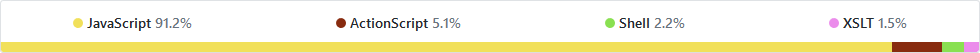

Fallout 4
Pod pokličkou fanouškovského překladu
Časový rámec
- Datum vydání hry: 10. 11. 2015
- Začátek překladu: 25. 11. 2015
- Konec hrubého překladu: 24. 12. 2017
Velikost týmu
- Počet aktivních překladatelů: 5 / 21
- Počet aktivních korektorů: 1 / 4
- Počet aktivních testerů: 0 / 7
Dosavadní výsledky
- První neoficiální překlad na XB1 a PS4
- Portnutí Skyrim překladu (včetně XB1 a PS4)
- 2300 fanoušků na Facebooku
- Přes 1000 stažení ALFA verze


Slovníček pojmů
- Základní výrazy: 1480 záznamů
- Přívlastky osob: 133 záznamů
- Přívlastky věcí: 210 záznamů
- Charakterové rysy: 47 záznamů
Básničky
Sue is mean and not nice
That is why I shot her twice
Sue se chová zle a protivně,
proto střelil jsem do ní kulky dvě.
Vtipy
- The past, the present, and the future walked into a bar.
- It was tense.
- Minulost, přítomnost a budoucnost vešly do baru.
- Bylo to nadčasové.
Terminály
Loading saved position...
Nahrávání uložené pozice...
Aliasy
Travel to <Alias=ActualLocation>
Jdi do osady <Alias=ActualLocation>
Dělba práce
-
107 překladatelských dávek
překlad, korektura, kontrola -
629 testovacích „scénářů“
každý povinně 2 průchody
GitHub
 620 commitů, 250 issuesWiX Toolkit
UJČ a FF UK
- Internetová jazyková příručka
- SSČ a SSJČ
- Korpus a paralelní korpus
- Guard Rail strážce železnice → svodidla
- Graduated Cylinder absolventský klobouk → odměrný válec
- SS Prescott Soldier SS voják Prescott → voják z SS Prescott
- Life Support životní podpora → systém na podporu života
- Control Terminal kontrolní terminál → řídicí terminál
- Short Circuit krátký okruh → zkrat